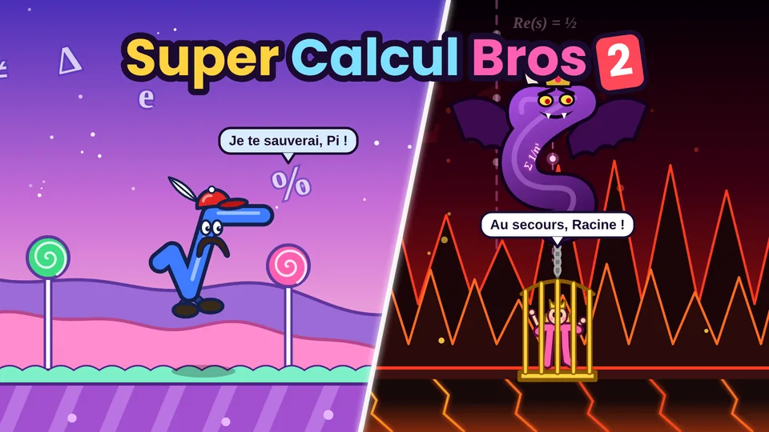
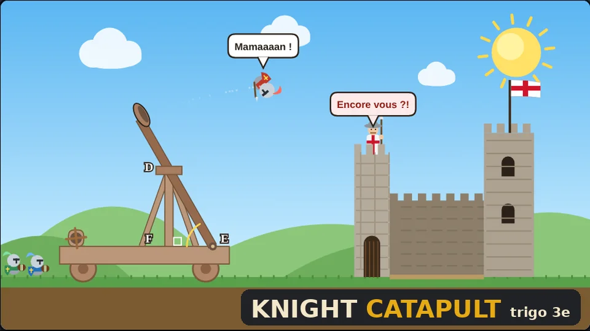
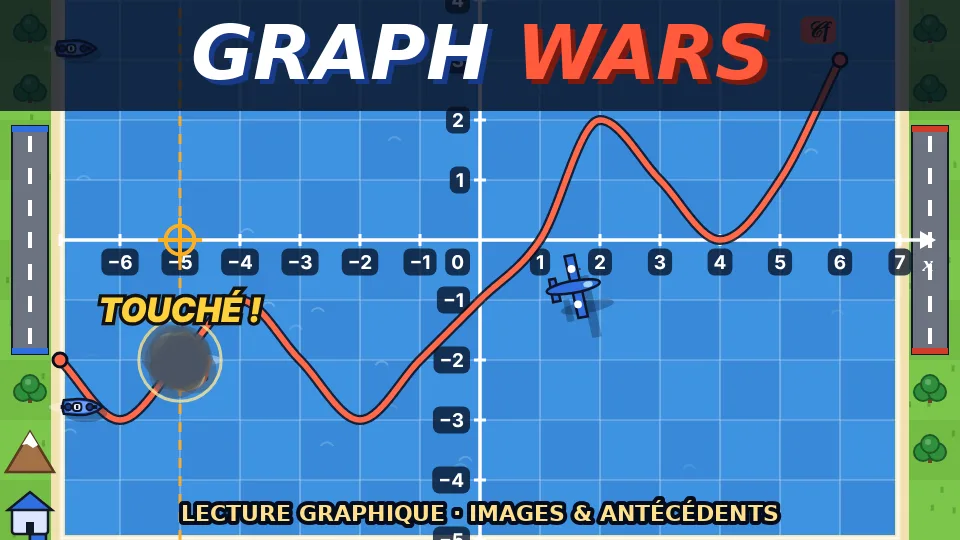
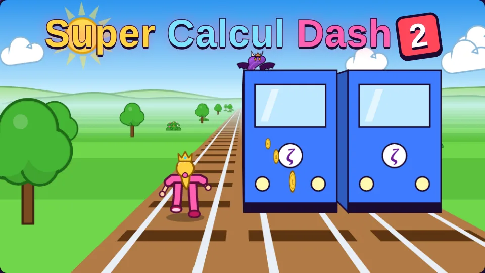
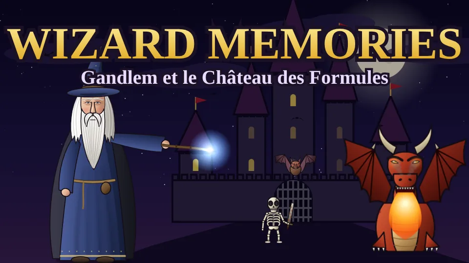

Maths · Jeux
🎮 Jeux de maths
Choisis un jeu. Conseil : joue avec le son, la musique s'emballe au fil des niveaux !
-

Calcul littéral Super Calcul Bros 2 Aide Racine à rattraper le démon Zêta et à sauver la Princesse Pi en développant et en factorisant. 20 calculs, 5 mondes, un chrono. Niveau 3e – 2de -

Trigonométrie Knight Catapult Règle la catapulte avec sinus, cosinus et tangente pour envoyer les Chevaliers du Triangle Rectangle dans les châteaux de Lord Arctan. 10 châteaux, 3 chevaliers par château. Niveau 3e -

Fonctions Graph Wars Général, lis les courbes ! Trouve des images pour guider tes bombardiers et des antécédents pour mettre ta flotte à l'abri de l'Amiral Asymptote. 8 jours, 16 missions. Niveau 3e -

Équations Super Calcul Dash 2 Zêta a capturé Racine et a posé des obstacles sur ses rails ! Aide la Princesse Pi à le libérer : résous chaque équation avant l'obstacle pour sauter, glisser ou changer de rail, et ramasse les pièces π. 20 obstacles, 3 cœurs. Niveau 3e – Terminale -

Formules du cours Wizard Memories Incarne Gandlem, mage des lemmes, et traverse le château de Zêta : chaque monstre ne cède qu'à la bonne formule du cours. Choisis ta classe et tes notions, apprends tes formules par cœur ! 20 monstres, 5 étages, 3 cœurs. Niveau 3e – Terminale